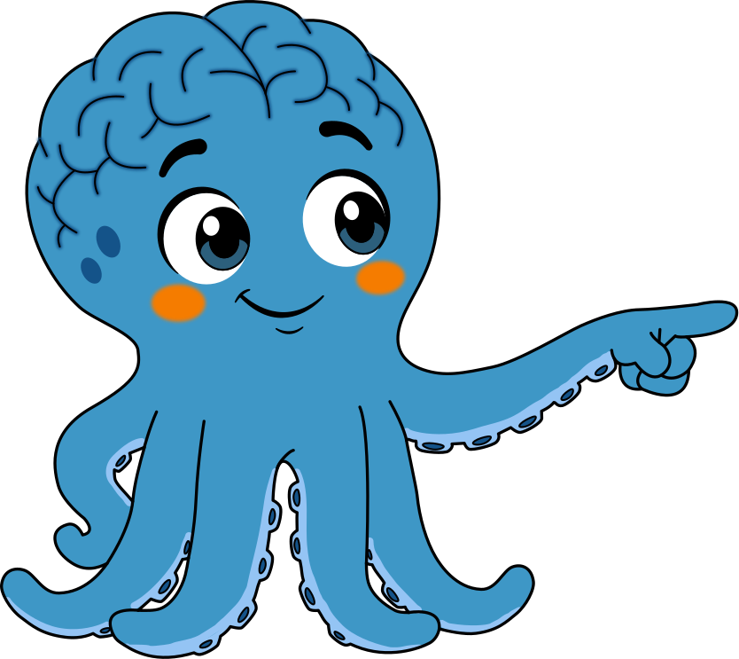

GIMNASIO DEL CEREBRO
Guía del facilitador
Sesión 6 · Dos letras, un sonido: sh y ch
Guía del facilitador · 60 minutos · En inglés
Objetivo: entender que algunas parejas de letras suenan como un solo sonido (digraphs), y leer y distinguir palabras con sh (ship, fish) y con ch (chip, lunch).
Cuidar el ánimo: después de cinco sesiones de "una letra, un sonido", esto rompe la regla. Preséntalo como un secreto: "Some letters are best friends. When they hold hands, they make one new sound!" La ch ya la conoce del español (chocolate): úsala para que se sienta seguro antes de la sh.
Plan minuto a minuto
| Min | Momento | Qué hacer |
|---|
| 0 a 5 | Stomp and Clap | Repaso de la sesión 5: un pisotón por sonido y aplauso con la palabra: stomp, plant, frost, clamp. |
| 5 a 10 | Review | Lee 6 palabras de las sesiones 3 a 5: stamp, frog, nest, clap, plant, milk. |
| 10 a 18 | Best Friends | Presenta las digraph cards (pág. 5) con su gesto. ch primero: brazos de tren, "ch, ch, ch, like a train!" Luego sh: dedo en la boca, "shhh, the baby is sleeping!" Pares para escuchar (pág. 4): ship / chip, shop / chop, shin / chin. Él hace el gesto del sonido que oye. |
| 18 a 28 | One Box, Two Letters | Tableros de la pág. 6. La digraph card ocupa una sola caja. Arma ship, fish, chop, chin, much, shed. Después en 4 cajas: crash, shelf, lunch, bench. "How many letters? Four. How many sounds? Three!" |
| 28 a 34 | Train or Baby? | Pausa activa, oral. Di una palabra: si tiene ch, hace el tren por el salón; si tiene sh, se queda quieto con el dedo en la boca. Usa las palabras de la pág. 4. |
| 34 a 46 | Oki's Fishing | Las 16 cartas boca abajo en un "estanque" (pág. 7). Pesca una, la lee y la pone en la cubeta de sh o de ch (pág. 8). Si la lee mal, vuelve al estanque. "Catch a word! Read it! Train or baby?" |
| 46 a 52 | Quick Check 6 | 10 palabras nuevas y 2 alien words (pág. 9), sin ayuda. Anota en la pág. 4. |
| 52 a 57 | My Sentences | Lee y dibuja las dos oraciones (pág. 10). Oki es la tricky word que ya conoce del cuento. |
| 57 a 60 | Cierre | Sticker en su certificado. Entrega la misión para casa (pág. 11) a la familia. |
GIMNASIO DEL CEREBRO
Guía del facilitador
Antes de empezar
Sesión 6 · Requisitos, errores típicos y ajustes

Requisito: 8 o más de 10 en el Quick Check 5. Si las palabras de 5 sonidos todavía le cuestan, esta sesión igual funciona: sh y ch se pueden aprender con palabras cortas. Solo salta crash, shelf, lunch y bench.
Lo que entrena hoy
| Conciencia fonémica | Separar un sonido que se escribe con dos letras: ship tiene 4 letras pero 3 sonidos. |
| Discriminación auditiva | Distinguir sh (largo, suave) de ch (corto, como un golpe). |
| Flexibilidad | Cambiar la regla de "una letra, un sonido" por "a veces dos letras, un sonido". Es un ejercicio de función ejecutiva, no solo de lectura. |
Error típico en hispanohablantes
Dice ch cuando es sh: lee "chip" por ship o "fich" por fish. En el español de Colombia casi no existe el sonido sh, así que el cuerpo lo cambia por el más cercano, la ch. Prueba que lo resuelve: "Can you make it long?" La sh se puede estirar (shhhhh); la ch no (ch es un golpe corto). Si puede estirarlo, es sh.
Lee las dos letras por separado: dice "s-h-i-p" o "c-h-i-p". Tapa la digraph card con dos dedos juntos: "These two are friends. They say ONE sound."
Si le cuesta:
- Haz toda la sesión solo con ch, que ya conoce del español, y deja sh para la próxima.
- En Oki's Fishing usa solo 8 cartas: 4 de sh y 4 de ch.
- Antes de leer, que diga el gesto: si ve sh, dedo en la boca; si ve ch, brazos de tren.
Si arrasa:
- Reto con la sh al final y consonantes dobles: crash, brush, fresh.
- Avísale lo que viene: th, el sonido que se hace con la lengua afuera, y la palabra "the".
GIMNASIO DEL CEREBRO
Materiales y registro
Materiales y registro
Sesión 6 · Estudiante: · Fecha:
| Material |
|---|
| Digraph cards sh y ch (en este PDF, pág. 5, recortadas) |
| Letter cards de las sesiones 1 y 2 (necesitas i, o, u, e, a, p, f, n, d, m, l, b, r, c, t a mano) |
| Tableros de 3 y 4 cajas (en este PDF, pág. 6) |
| Cartas de Oki's Fishing, 16 (pág. 7, recortadas) y cubetas sh / ch (pág. 8) |
| Opcional: una caja o tazón como "estanque" para las cartas |
| Quick Check 6 (pág. 9), oraciones (pág. 10), lápiz y colores |
| Certificado con stickers y misión para casa (pág. 11) |
Registro rápido
| Objetivo | Cómo le fue |
|---|
| Ánimo al llegar / al salir | Llegó: 🙂 😐 🙁 Salió: 🙂 😐 🙁 |
| Distingue sh / ch de oído | Pares acertados: / 6 |
| Pone la digraph en una caja | solo con ayuda todavía no |
| Oki's Fishing | Cartas leídas y en la cubeta correcta: / 16 |
| Dice ch por sh | casi nunca a veces casi siempre |
| Quick Check 6 | Reales: / 10 Alien words: / 2 |
Notas (ánimo, qué funcionó, qué costó):
GIMNASIO DEL CEREBRO
Solo para el facilitador
SOLO PARA EL FACILITADOR
Pares para escuchar · Best Friends y Train or Baby?
ship / chip
shop / chop
shin / chin
fish · dish
much · rich
shut · chat
Azul: sh (bebé, dedo en la boca). Naranja: ch (tren). Di los pares en desorden y que haga el gesto.
Quick Check 6 · Registro
| # | Palabra | Digraph | ✓ Lee la palabra | Cambia sh por ch | Qué dijo |
|---|
| 1 | rush | sh | | | |
| 2 | chest | ch | | | |
| 3 | cash | sh | | | |
| 4 | chug | ch | | | |
| 5 | shift | sh | | | |
| 6 | punch | ch | | | |
| 7 | chimp | ch | | | |
| 8 | brush | sh | | | |
| 9 | shot | sh | | | |
| 10 | flash | sh | | | |
| Total palabras reales | ___ / 10 | ___ / 6 | |
| 11 | shom | sh | | | |
| 12 | chep | ch | | | |
Cómo leer el resultado:
- 8 a 10 y al menos 1 alien word: pasa a la sesión 7: th, ck y la palabra "the".
- 8 a 10 pero cambia sh por ch: lee bien pero el sonido sh no está firme. Repite Train or Baby? al inicio de la próxima sesión.
- 5 a 7: si los errores son solo en sh, otra sesión de sh antes de seguir. Si también falla ch, revisa que no esté leyendo las dos letras por separado.
- 0 a 4: vuelve a palabras sin digraphs unos días más. Está bien.
GIMNASIO DEL CEREBRO
Recortables y tableros
Digraph cards: dos letras en una sola tarjeta, porque suenan como un solo sonido. Recortar por la línea punteada. Hay dos de cada una.
ch
🚂 ch, ch, ch... the train!
ch
🚂 ch, ch, ch... the train!

Two letters,
one sound!
GIMNASIO DEL CEREBRO
Recortables y tableros
One Box, Two Letters
La digraph card va en la caja naranja, que es más ancha
No se recorta. Arriba para palabras de 3 sonidos (ship, fish, chop, chin, much, shed). Abajo para palabras de 4 sonidos (crash, shelf, lunch, bench). Mueve la caja naranja al lugar donde va la sh o la ch: al inicio o al final.
f · i · sh = 4 letters, 3 sounds!
GIMNASIO DEL CEREBRO
Recortables y tableros
Cartas de Oki's Fishing: 8 con sh y 8 con ch, todas del mismo color para que la diferencia la encuentre leyendo. Mejor en cartulina. Recortar por la línea punteada.
GIMNASIO DEL CEREBRO
Hoja del estudiante
Train or Baby?
Catch it · Read it · Put it here
ch🚂 ch, ch, ch... the train
Respuestas: sh: fish, shed, dish, ship, shut, shelf, shop, crash. ch: chip, much, chin, bench, chop, rich, lunch, chat.
GIMNASIO DEL CEREBRO
Hoja del estudiante
My Sentences
Lee la oración y dibújala

Fred can hop on a ship.
Draw it!
Oki had a chip on a dish.
Draw it!
GIMNASIO DEL CEREBRO
Misión para casa
Para entregar a la familia al final de la sesión.
Misión para casa · Semana 6
¿Tren o bebé?
Esta semana tu hijo/a descubrió que en inglés algunas letras se toman de la mano y suenan como una sola: sh (como cuando callamos a un bebé: shhh) y ch (como un tren: ch, ch, ch). La sh no la usamos en el español de aquí, por eso a veces sale "chip" cuando dice ship. Es normal.
Juego 1: Tren o bebé. Di una palabra. Si tiene ch, hace el tren por la casa. Si tiene sh, se queda quieto con el dedo en la boca. Prueben con: ship, chip, fish, lunch, shop, chop.
Juego 2: ¿Se puede estirar? La sh se puede alargar (shhhhh) y la ch no (es un golpe corto). Jueguen a quién hace la sh más larga sin respirar.
Juego 3: Pesca en la cocina. Escriban en papelitos fish, dish, chip, lunch y peguen cada uno donde va: dish en un plato, lunch en la lonchera, fish en la nevera. Que los lea cada vez que pase.
Palabras de la semana: ship · fish · shop · chip · chop · lunch
- Unos minutos varios días funcionan mejor que mucho tiempo un solo día.
- Si dice "chip" por ship, no lo corrijas con un "no": pregúntale "¿se puede estirar?" y que lo descubra.
- No hace falta que tú sepas inglés: con los gestos del tren y del bebé basta.
______________________ · Facilitador · Gimnasio del Cerebro · 301 491 6120